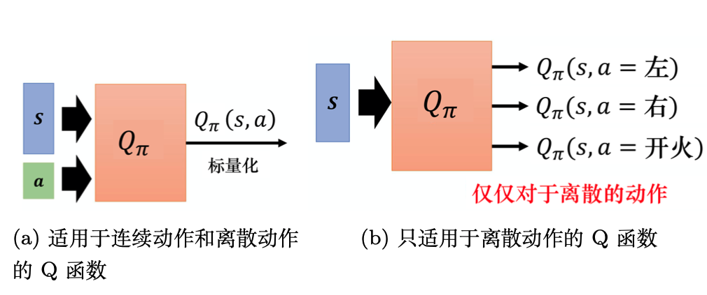

强化学习基础巩固（三）——DQN
本节介绍强化学习经典方法——DQN。
传统的强化学习算法会使用表格的形式存储状态价值函数或动作价值函数，但是这样的方法存在很大的局限性。例如，现实中的强化学习任务所面临的状态空间往往是连续的，存在无穷多个状态，在这种情况下，就不能再使用表格对价值函数进行存储。价值函数近似利用函数直接拟合状态价值函数或动作价值函数，降低了对存储空间的要求，有效地解决了这个问题。
为了在连续的状态和动作空间中计算值函数，我们可以用一个函数来表示近似计算，称为价值函数近似。
其中，分别是状态和动作的向量表示，函数通常是一个参数为的函数，比如神经网络，其输出为一个实数，称为 Q 网络。
DQN（deep Q-network，DQN）是指基于深度学习的Q-learning算法，主要结合了价值函数近似与神经网络技术，并采用目标网络和经历回放的方法进行网络的训练。在Q-learning中，我们使用表格来存储每个状态下采取动作获得的奖励，即状态-动作值函数。然而，这种方法在状态量巨大甚至是连续的任务中，会遇到维度灾难问题，往往是不可行的。因此，DQN采用了价值函数近似的表示方法。
状态价值函数
DQN是基于价值的算法，在基于价值的算法里面，我们学习的不是策略，而是评论员（critic）。评论员的任务是评价现在的动作有多好或有多不好。这里需要强调，评论员无法凭空评价一个状态的好坏，它所评价的是在给定某一个状态的时候，如果接下来交互的演员的策略是，我们会得到多少奖励，这个奖励就是我们评价得出的值。因为就算是同样的状态，接下来的不一样，得到的奖励也是不一样的。评论员其实都要绑定一个演员，它是在衡量某一个演员的好坏，而不是衡量一个状态的好坏。这里要强调一下，评论员的输出是与演员有关的，状态的价值其实取决于演员，当演员改变的时候，状态价值函数的输出其实也是会跟着改变的。
动作价值函数
还有另外一种评论员称为Q函数，它又被称为动作价值函数。状态价值函数的输入是一个状态，它根据状态计算出这个状态以后的期望的累积奖励是多少。动作价值函数的输入是一个状态-动作对，其指在某一个状态采取某一个动作，假设我们都使用策略，得到的累积奖励的期望值有多大。
Q函数有一个需要注意的问题是，策略在看到状态的时候，它采取的动作不一定是。Q函数假设在状态强制采取动作，而不管我们现在考虑的策略会不会采取动作，这并不重要。在状态强制采取动作。接下来都用策略继续玩下去，就只有在状态，我们才强制一定要采取动作，接下来就进入自动模式，让策略继续玩下去，得到的期望奖励才是。
Q函数有两种写法：
- 如图中a所示，输入是状态与动作，输出就是一个标量。这种Q函数既适用于连续动作（动作是无法穷举的），又适用于离散动作。
- 如图中b所示，输入是一个状态，输出就是多个值。这种Q函数只适用于离散动作。假设动作是离散的，比如动作就只有 3 个可能：往左、往右或是开火。Q函数输出的 3 个值就分别代表是往左的时候的 Q 值，是往右的时候的 Q 值，还有是开火的时候的 Q 值。

目标网络
我们在学习Q函数的时候，也会用到时序差分方法的概念。
所以我们在学习的时候，Q 函数输入得到的值，与输入得到的值之间，我们希望它们相差，这与时序差分方法的概念是一样的。但是实际上这样的输入并不好学习，假设这是一个回归问题，如图所示，是网络的输出，是目标，目标是会变动的。当然如果我们要实现这样的训练，其实也没有问题，就是在做反向传播的时候，的参数会被更新，我们会把两个更新的结果加在一起。但这样会导致训练变得不太稳定，因为假设我们把当作模型的输出， 把当作目标，我们要去拟合的目标是一直在变动的，这是不太好训练的。

所以我们会把其中一个 Q 网络，通常是把图右边的 Q 网络固定住。在训练的时候，我们只更新左边的 Q 网络的参数，而右边的 Q 网络的参数会被固定。因为右边的 Q 网络负责产生目标，所以被称为目标网络。因为目标网络是固定的，所以现在得到的目标的值也是固定的。我们只调整左边Q网络的参数，它就变成一个回归问题。我们希望模型输出的值与目标越接近越好，这样会最小化它的均方误差。
在实现的时候，我们会把左边的 Q 网络更新多次，再用更新过的 Q 网络替换目标网络。但这两个网络不要一起更新，一起更新，又会产生前文提到的更新不稳定的问题。一开始这两个网络是一样的，在训练的时候，我们会把右边的 Q 网络固定住，在做梯度下降的时候，只调整左边Q网络的参数。我们可能更新 100 次以后才把参数复制到右边的网络中，把右边网络的参数覆盖，目标值就变了。就好像我们本来在做一个回归问题，训练后把这个回归问题的损失降下去以后，接下来我们把左边网络的参数复制到右边网络，目标值就变了，接下来就要重新训练。
经验回放
经验回放会构建一个回放缓冲区（replay buffer），回放缓冲区又被称为回放内存（replay memory）。回放缓冲区是指现在有某一个策略与环境交互，它会去收集数据，我们把所有的数据放到一个数据缓冲区（buffer）里面，数据缓冲区里面存储了很多数据。比如数据缓冲区可以存储 5 万笔数据，每一笔数据就是记录，我们之前在某一个状态，采取某一个动作，得到了奖励，进入状态。我们用去与环境交互多次，把收集到的数据放到回放缓冲区里面。 回放缓冲区里面的经验可能来自不同的策略，我们每次用与环境交互的时候，可能只交互 10000 次，接下来我们就更新了。但是回放缓冲区里面可以放 5 万笔数据，所以 5 万笔数据可能来自不同的策略。回放缓冲区只有在它装满的时候，才会把旧的数据丢掉。所以回放缓冲区里面其实装了很多不同的策略的经验。
在每次迭代里面，从回放缓冲区中随机挑一个批量（batch）出来，即与一般的网络训练一样，从训练集里面挑一个批量出来。我们采样该批量出来，里面有一些经验，我们根据这些经验去更新Q函数。这与时序差分学习要有一个目标网络是一样的。我们采样一个批量的数据，得到一些经验，再去更新 Q 函数。
如果某个算法使用了经验回放这个技巧，该算法就变成了一个异策略的算法。因为本来 Q 是要观察的经验的，但实际上存储在回放缓冲区里面的这些经验不是通通来自于，有些是过去其他的策略所留下来的经验。因为我们不会用某一个就把整个回放缓冲区装满，拿去测Q函数，只是采样一些数据放到回放缓冲区里面，接下来就让 Q 去训练。所以 Q 在采样的时候，它会采样到过去的一些数据。
这么做有两个好处。第一个好处是，在进行强化学习的时候， 往往最花时间的步骤是与环境交互，训练网络反而是比较快的。因为我们用 GPU 训练其实很快，真正花时间的往往是与环境交互。用回放缓冲区可以减少与环境交互的次数，因为在做训练的时候，经验不需要通通来自于某一个策略。一些过去的策略所得到的经验可以放在回放缓冲区里面被使用很多次，被反复的再利用，这样可以比较高效地采样经验。第二个好处是，在训练网络的时候，其实我们希望一个批量里面的数据越多样（diverse）越好。如果批量里面的数据都是同样性质的，我们训练下去，训练结果是容易不好的。如果批量里面都是一样的数据，训练的时候，性能会比较差。我们希望批量里的数据越多样越好。如果回放缓冲区里面的经验通通来自于不同的策略，我们采样到的一个批量里面的数据会是比较多样的。
DQN算法
Q：DQN和Q-learning有什么不同？
A：整体来说，DQN与Q-learning的目标价值以及价值的更新方式都非常相似。主要的不同点在于：DQN将Q-learning与深度学习结合，用深度网络来近似动作价值函数，而 Q-learning则是采用表格存储；DQN采用了经验回放的训练方法，从历史数据中随机采样，而Q-learning直接采用下一个状态的数据进行学习。
Q&A
Q：我们通常怎么衡量状态价值函数？其优势和劣势分别有哪些？
A：
-
基于蒙特卡洛的方法
本质上就是让演员与环境交互。评论员根据统计结果，将演员和状态对应起来，即如果演员看到某一状态，将预测接下来的累积奖励有多大，如果看到另一个状态，将预测接下来的累积奖励有多大。但是其普适性不好，其需要匹配到所有的状态。如果我们面对的是一个简单的例如贪吃蛇游戏等状态有限的问题还可以应对，但是如果我们面对的是一个图片型的任务，我们几乎不可能将所有的状态都“记录”下来。总之，其不能对未出现过的输入状态进行对应价值的输出。 -
基于蒙特卡洛的网络方法
为了弥补上面描述的基于蒙特卡洛的方法的不足，我们将其中的状态价值函数定义为一个网络，其可以对于从未出现过的输入状态，根据网络的泛化和拟合能力，“估测”出一个价值输出。 -
基于时序差分的网络方法
即基于时序差分的网络：在基于蒙特卡洛的方法中，每次我们都要计算累积奖励，也就是从某一个状态 一直到游戏结束的时候，得到的所有奖励的总和。所以要应用基于蒙特卡洛的方法时，我们必须至少把游戏玩到结束。但有些游戏要玩到游戏结束才能够更新网络花费的时间太长了，因此我们会采用基于时序差分的网络方法。基于时序差分的网络方法不需要把游戏玩到结束，只要在游戏某一个状态的时候，采取动作得到奖励，进入状态，就可以应用基于时序差分的网络方法。其公式与之前介绍的时序差分方法类似，即：
- 蒙特卡洛方法与时序差分方法的区别
蒙特卡洛方法本身具有很大的随机性，我们可以将其视为一个随机变量，所以其最终的偏差很大。而对于时序差分，其具有随机的变量。因为在状态采取同一个动作，所得的奖励也不一定是一样的，所以对于时序差分方法来说，是一个随机变量。但是相对于蒙特卡洛方法的来说，的随机性非常小，这是因为本身就是由很多的组合而成的。
从另一个角度来说，在时序差分方法中，我们的前提是，但是我们通常无法保证和计算的误差为0。所以当 和计算得不准确，得到的结果也会是不准确的。总之，两者各有优劣。目前，基于时序差分的方法是比较常用的，基于蒙特卡洛的方法其实是比较少用的。
Q：基于本章正文介绍的基于蒙特卡洛的网络方法，我们怎么训练模型呢？或者我们应该将其看作机器学习中什么类型的问题呢？
A：理想状态下，我们期望对于一个输入状态，输出其无误差的奖励价值。对于价值函数，如果输入状态是，正确的输出价值应该是。所以在训练的时候，其就是一个典型的机器学习中的回归问题。我们实际中需要输出的仅仅是一个非精确值，即我们希望在输入状态的时候，输出价值与越近越好。其训练方法与我们在训练卷积神经网络等深度神经网络时的方法类似。
Q：DQN和Q-learning有什么异同点？
A：整体来说，从名称就可以看出，两者的目标价值以及价值的更新方式基本相同。但有如下不同点：
- 首先，DQN将Q-learning与深度学习结合，用深度网络来近似动作价值函数，而Q-learning则是采用表格进行存储。
- DQN采用了经验回放的技巧，从历史数据中随机采样，而Q-learning直接采用下一个状态的数据进行学习。
Q：随机性策略和确定性策略有什么区别吗？
A：随机性策略表示为某个状态下动作取值的分布，确定性策略在每个状态只有一个确定的动作可以选。从熵的角度来说，确定性策略的熵为0，没有任何随机性。随机性策略有利于我们进行适度的探索，确定性策略不利于进行探索。
Q：请问不打破数据相关性，神经网络的训练效果为什么就不好？
A：在神经网络中通常使用随机梯度下降法。随机的意思是我们随机选择一些样本来增量式地估计梯度，比如常用的批量训练方法。如果样本是相关的，就意味着前后两个批量很可能也是相关的，那么估计的梯度也会呈现出某种相关性。但是在极端条件下，后面的梯度估计可能会抵消掉前面的梯度估计量，从而使得训练难以收敛。